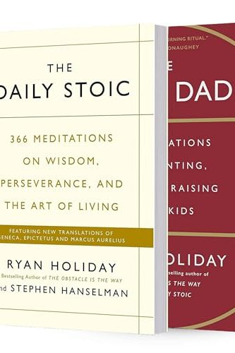

Library › Self-Improvement
The Daily Stoic — Summary & Key Lessons

366 meditations on wisdom, perseverance, and the art of living — Stoicism as a daily operating system.
📖 OPEN THE FULL INTERACTIVE BREAKDOWN →🌐 Read it in Hindi, Hinglish, Gujarati, Tamil & 22 more languages — free, with audio.
💡 The Big Idea
Stoicism isn't cold detachment — it's the operating system of doers from Marcus Aurelius (emperor) to Epictetus (slave): identical software, opposite hardware, proving circumstances aren't the variable that matters. The Daily Stoic arranges it as practice, not philosophy: a year of daily meditations across three disciplines — PERCEPTION (see events as they are, stripped of the panic-narration: 'we suffer more in imagination than reality'; the DICHOTOMY OF CONTROL sorts everything into yours — judgments, responses, effort — and not-yours: outcomes, others, reputation, weather; misery is mostly category error), ACTION (do the right thing now, with what's in front of you — the obstacle IS the way: every impediment feeds virtue practice; amor fati — love your fate — turns acceptance from resignation into fuel), and WILL (train for adversity before it arrives: premeditatio malorum — rehearsing loss — inoculates against shock and multiplies gratitude; memento mori — you could leave life right now — is the deadline that makes priorities honest). The delivery mechanism matters: one page daily, journaled morning or evening, because Stoicism read once is trivia; Stoicism repeated daily is temperament.
🧠 The 6 Key Lessons
Lesson 1: The Dichotomy of Control: Sort First, Feel Second
Perception (Jan-Apr meditations)
Epictetus's opening move — 'the chief task in life is simply this: to identify and separate matters into what's in my control and what isn't' — is a filing system for anxiety. In your control: your judgments, intentions, effort, responses. Not: outcomes, other people's opinions and actions, markets, traffic, the past. Every wasted emotional hour is spent in the second file; every unit of real power lives in the first. The daily practice: before reacting to anything, run the sort — the stalled deal, the rude message, the delayed flight all decompose into an uncontrollable event plus a fully controllable response, and the response is where your entire quality of life is manufactured. Advanced version: even your reputation is other people's file; your character is yours.
📖 Example: Epictetus himself is the proof-of-concept: born a slave, leg crippled (by one account, deliberately by his master), exiled by an emperor — a man with less external control than almost anyone in history, whose classroom teachings (recorded by students, since… Read the full example →
⚡ Do this: For one week, keep a two-column card: every stressor goes left (mine) or right (not mine). For right-column items, write one sentence: 'my move is only ___.' Review nightly — watch the right column stop billing you.
Lesson 2: Amor Fati: The Obstacle Is Curriculum
Action (May-Aug meditations)
Stoic action rests on a reframe: events aren't obstacles to your training — they ARE the training. The blocked path exercises creativity; the unfair critic exercises equanimity; the failure exercises humility and iteration. Marcus's formula ('the impediment to action advances action') plus Nietzsche's later phrase amor fati (don't merely tolerate fate — love it, the way fire loves fuel: everything thrown on it becomes flame) convert setbacks from interruptions into assignments. This is not positivity theater: the Stoic doesn't call the loss good; they call it MATERIAL. The practical discipline is the response-gap: event → (pause) → 'what does this make possible? which virtue is this rep for?' — asked mechanically, especially when you don't feel like it, because temperament is built during bad weather, not described during good.
📖 Example: Thomas Edison, in Holiday's retelling: age 67, his life's work — factory campus, papers, prototypes — burning in a massive fire chemical-fed into colors too beautiful to look away from. Edison's recorded response: told his son to fetch his mother — 'she'll… Read the full example →
⚡ Do this: Install the two-question gap: next setback, before any complaint, write (1) 'what does this make possible?' and (2) 'which virtue is this a rep for?' (patience, courage, creativity, humility). Do it for every annoyance for 7 days — small reps build the big response.
Lesson 3: Memento Mori: Rehearse Loss, Harvest Gratitude
Will (Sep-Dec meditations)
The Will discipline trains for what can't be controlled at all. PREMEDITATIO MALORUM — the morning rehearsal of what could go wrong (the rude official, the failed pitch, the loss) — isn't pessimism; it's shock-absorption: the rehearsed mind meets adversity as expected weather, and everything that DOESN'T go wrong arrives as bonus (Seneca: 'the unexpected blow lands heaviest'). Its companion, MEMENTO MORI — 'you could leave life right now; let that determine what you do and say and think' (Marcus) — is the ultimate prioritizer: deadlines make projects real, and death is the deadline that makes LIFE real: petty grievances, postponed calls, deferred dreams all re-price instantly against it. The Stoics kept skulls on desks not from morbidity but accounting. Paired with the evening REVIEW (Seneca's nightly audit: what did I do badly? what well? what's left undone?), the practice compounds: rehearse in the morning, act in the day, audit at night — a full-loop operating system in twenty minutes of margins.
📖 Example: Seneca's letters practice what they preach: history's richest philosopher periodically lived days of deliberate poverty — coarse bread, hard bed, worst clothes — asking 'is this what I feared?' The rehearsal shrank the fear of losing his fortune to a known,… Read the full example →
⚡ Do this: Adopt the 3-part daily loop for 30 days: morning — 60 seconds of premeditatio (today's likely frictions, pre-accepted); anytime — one memento-mori check before saying yes/no to something ('does this matter against the real deadline?'); evening — Seneca's three questions in a journal. Twenty minutes total; temperament included.
Lesson 4: The Inner Citadel: Journaling and the View From Above
The Practice Layer: How Stoics Actually Trained
Stoicism survived 2,000 years not as doctrine but as EXERCISES — and two carry most of the weight. THE JOURNAL: Marcus Aurelius' 'Meditations' was never meant for readers; it's a private training log — the emperor drilling himself, repeating fundamentals, catching his own vanity ('take care not to be Caesarified'). The Stoic journal is not a diary of events but a rehearsal space: morning pages anticipate the day's frictions, evening pages audit responses against principles (Seneca: 'I examine my entire day and go back over what I've done and said, hiding nothing') — the loop converts philosophy from reading material into reflex. THE VIEW FROM ABOVE: Marcus' perspective drill — zoom out mentally until you see your city, then the earth, then your problem's true size at that altitude; anger and anxiety are altitude problems, sized for a room, dissolving at scale. Add the MORNING PREPARATION (his famous opening: 'today I will meet the meddling, the ungrateful, the arrogant... and none of them can harm me') and you have the complete daily kit: rehearse at dawn, zoom out at noon, audit at night — the citadel isn't built in crises; it's built in margins, one unglamorous page at a time.
📖 Example: The book's own origin proves the method: 'Meditations' exists because the most powerful man on earth — commanding armies through plague and betrayal — sat in a war tent on the Danube frontier writing notes to himself like 'be tolerant with others and strict… Read the full example →
⚡ Do this: Start the minimum viable citadel: one index card each morning — top half, today's likely friction and your pre-decided response; bottom half (filled at night), Seneca's audit: what did I do well, what poorly, what's left? When overwhelmed mid-day, run 30 seconds of the View From Above: your building, your city, the continent, the century. Then return to the only thing that was ever yours: the next response.
Lesson 5: Premeditatio Malorum: Rehearse the Worst to Conquer It
Part 3: The Discipline of Action
The Stoics rehearsed disaster before it happened — imagining the loss of a job, a relationship, even their own life — not to be pessimistic but to be prepared. Seneca wrote: 'What is quite unlooked for is more crushing in its effect; unexpectedness adds to the weight of a disaster.' By visualizing the worst case calmly, you strip it of its power to shock you and you pre-plan your response. The person who has already mentally survived losing everything cannot be destabilized by losing something. This is not worry; worry is passive, this is active — you walk through the disaster as a drill, not as a victim.
📖 Example: Holiday recounts how the Stoics practiced 'negative visualization' daily: Marcus Aurelius reminding himself that the people he loved were mortal, so that every day with them was a gift, not an entitlement — and grief, when it came, was already processed. Read the full example →
⚡ Do this: Pick one thing you dread losing. Spend 5 minutes writing how you would respond if it happened tomorrow — then spend the rest of the day grateful it hasn't.
Lesson 6: The Bookends: A Stoic Morning and Evening Routine
Part 4: The Daily Practice
The Stoics framed each day with two deliberate rituals. Morning: pre-commit to the day's character — 'What do I want to be today? Patient. Honest. Unbothered by what's not mine.' Evening: review — 'What did I do well? What did I do badly? What can I do better tomorrow?' This bookend structure turns philosophy from an abstract idea into a daily feedback loop. The morning frame sets your standard before the world sets it for you; the evening review catches drift before it becomes a habit. Twenty minutes a day of intentional self-examination is the entire secret of 'wise' people — they are just running the loop.
📖 Example: Holiday shows how Marcus Aurelius wrote his Meditations as exactly this practice — morning resolves and evening reviews, scribbled at dawn and dusk. The most powerful man in the world ran the same daily loop a student runs: set the standard, audit the day. Read the full example →
⚡ Do this: For 7 days: every morning write one sentence about the character you'll keep, and every night write one line on what you'd do differently. That's the whole practice.
✅ 5-Step Action Plan
- Sort every stressor into controllable/uncontrollable — respond only where you own the file.
- Treat obstacles as assigned reps: name the virtue each one trains.
- Rehearse the day's frictions each morning; audit with Seneca's three questions each night.
- Run one memento-mori priority check daily — the real deadline reprices everything.
- One page of Stoicism daily beats a hundred read once — repetition is the philosophy.
💬 Best Quotes from The Daily Stoic
- “You have power over your mind — not outside events. Realize this, and you will find strength.”
- “We suffer more often in imagination than in reality.”
- “The impediment to action advances action. What stands in the way becomes the way.”
Interactive version: mark lessons as read, listen in your language, share quote cards.